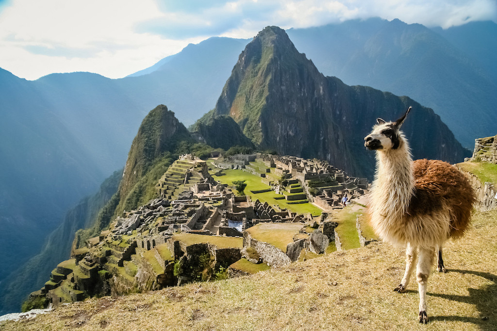

|  |
Machu Picchu is a 15th-century Inca citadel located in the Eastern Cordillera of southern Peru on a 2,430-meter (7,970 ft) mountain ridge. It is located in the Machupicchu District within Urubamba Province above the Sacred Valley, which is 80 kilometers (50 mi) northwest of Cuzco. The Urubamba River flows past it, cutting through the Cordillera and creating a canyon with a tropical mountain climate.
Most archaeologists believe that Machu Picchu was constructed as an estate for the Inca emperor Pachacuti (1438–1472). Often mistakenly referred to as the "Lost City of the Incas", it is the most familiar icon of Inca civilization. The Incas built the estate around 1450 but abandoned it a century later at the time of the Spanish conquest. According to the new AMS radiocarbon-dating, it was occupied from c.
Machu Picchu was built in the classical Inca style, with polished dry-stone walls. Its three primary structures are the Intihuatana, the Temple of the Sun, and the Room of the Three Windows. Most of the outlying buildings have been reconstructed in order to give visitors a better idea of how they originally appeared. By 1976, 30% of Machu Picchu had been restored and restoration continues.
Machu Picchu was declared a Peruvian Historic Sanctuary in 1981 and a UNESCO World Heritage Site in 1983. In 2007, Machu Picchu was voted one of the New Seven Wonders of the World in a worldwide internet poll.